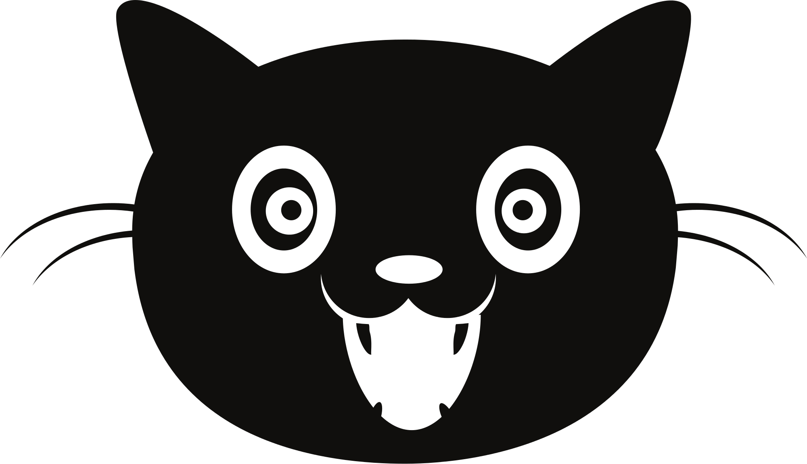

Web Junior 2016

Simon's Cat
Simon's Cat is an animated series featuring the mischievous and often hilarious antics of a fat white cat and his owner Simon. One of the most popular animated channels on YouTube, this is definitely a channel to subscribe to!

The channel includes:
- Simon's Cat Films - Short, funny animations that observe life as a cat owner.
- Simon's Cat Logic - A fun and informative series that looks at why cats do the silly things they do, and what we can do to help them live happy and healthy lives.
- Simon's Cat 'How To': Tutorials on how to draw and animate in Simon's Cat style.
- Simon's Cat: Behind the Scenes: Sneak peek into the work we do.
AB © 2016